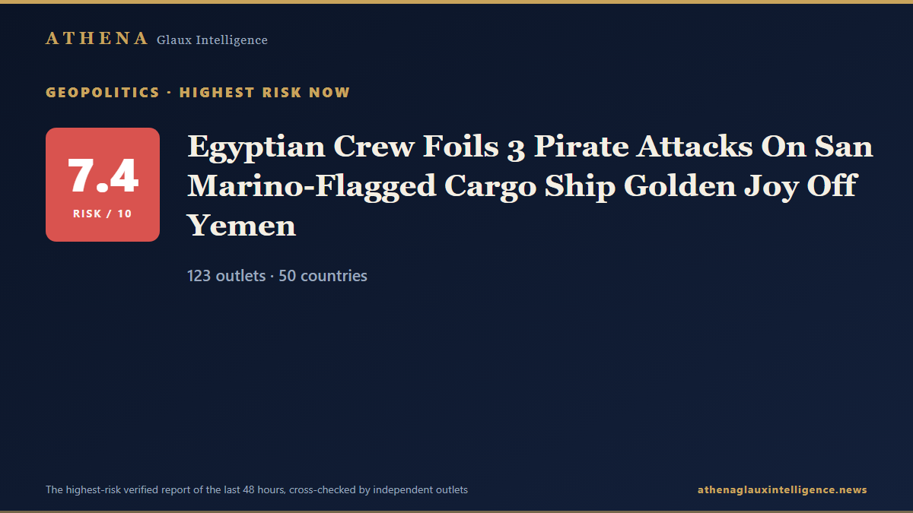
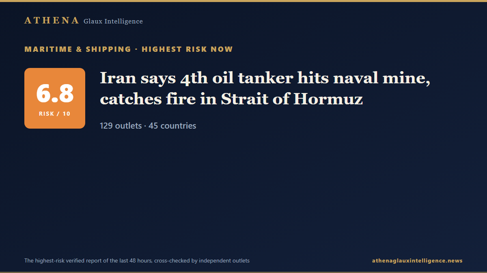

Risque 7.4Élevé
ATHENA Glaux Intelligence — Veille mondiale de l'information — chaque chiffre expliqué
Géopolitique
Toute la géopolitique >Risque le plus élevé maintenant

Risque en hausseHausse au cours des dernières 24 heures
Maritime et transport
Bureau maritime >Risque le plus élevé maintenant
Risque 6.8Élevé
Iran says 4th oil tanker hits naval mine, catches fire in Strait of Hormuz
Voir les preuves ›
Liste de surveillanceDétroits, ports et autres reportages maritimes
- Strait of HormuzPerturbéattack / strike · risk 6.8 · 131 newsrooms (72 h)
- Kerch Strait / Black SeaPerturbéattack / strike · risk 7.4 · 124 newsrooms (72 h)
- Danish Straits / BalticPerturbéattack / strike · risk 7.4 · 124 newsrooms (72 h)
Chaque titre, vérifié dans plusieurs pays.
ATHENA Glaux suit 748 médias dans le monde. Une information devient un événement vérifié seulement lorsque des médias indépendants la rapportent. Chaque événement indique qui l'a publiée en premier et un score de risque avec ses raisons.
1 299événements en 24 h
748médias suivis
42minutes entre deux mises à jour
Séisme ou inondation près de chez vous cette semaine ?
Saisissez votre ville et voyez les séismes, inondations, tempêtes et alertes officielles à proximité, avec une liste du kit d'urgence 72 heures. Gratuit, sans inscription, et votre lieu reste sur votre appareil.
Des articles arrivent de médias indépendants : quand deux se rejoignent sur la même histoire, un événement vérifié naît.
Comment ATHENA vérifie une information
- CollecterLes reportages arrivent de médias indépendants dans de nombreux pays.
- CroiserQuand deux médias se rejoignent sur la même information, elle devient un événement vérifié.
- ExpliquerChaque événement montre qui était le premier, jusqu'où il s'est propagé et pourquoi le risque est ce qu'il est.
Perspectives mondiales des risques
Bilans hebdomadaires et mensuels : les événements les plus à risque, les tendances par domaine et par région, et ce qu'il faut surveiller.
Lire les perspectives ›Briefing quotidien
Les dix événements mondiaux les plus importants du jour, les risques en hausse et les nouveaux événements, chaque chiffre expliqué.
Ouvrir le briefing du jour › Géopolitique
GéopolitiqueUK’s Burnham on a mission to build public support EU reset
While he insists it would be unthinkable to rejoin the bloc without another referendum, British PM Andy Burnham has nevertheless reopened the debate over Brexit. de France 24 English
6.5Importance
3.4Risque · modéré
87%Confiance
Les titres sont affichés en anglais, tels que publiés.
Géopolitique
Israeli settler terrorism surges by 42% in occupied West Bank
Settler terrorism in the West Bank has soared to new heights in 2026 as members of the far-right government encourage extremists to raid Palestinian villages. de The New Arab
Commerce et industrie
Iran Claims 5 Oil Tankers Hit Mines In Strait Of Hormuz In 2 Days As UKMTO Reports Projectile Strikes
Iran says five tankers struck its mines in the Strait of Hormuz in two days, three of them under US escort, while UKMTO reports projectile hits near Oman's Khasab. de Marine Insight
Sponsorisé
Cybernetics and Artificial Intelligence Lab Welcome to the Cybernetics and Artificial Intelligence Laboratory, established at the Department of Business Administration of the National and Kapodistrian University of Athens. The lab is headed by Professor Dimitrios Thomakos. The lab aims to do research that can be published in top venues. Our research uses tools and methods of Artificial Intelligence, and lies in the following areas: - Forecasting - Decision making - Cyber security - Finance We are always looking forward to collaborating with exceptional students!
En savoir plus – Cybernetics and Artificial Intelligence LabNavires dans les détroits du monde en ce moment
Comptages AIS en direct. Touchez ou survolez une barre pour le détail.
Derniers reportages
Spotify back online after brief outage, Downdetector shows
Anthropic falls below $83 IPO price in swift reversal after record listing
Norway in talks with Ukraine over attacks on Russian ships and regional stability
England logged record 5,258 heat-linked deaths this summer: health agency
Port of Gothenburg Invests in Electrification Infrastructure for Container Terminal
Japan accelerates ICC funding as US sanctions threaten court
‘Alliance is necessity, not choice’: Congress' Raj Kumar Verka targets BJP-SAD tie-up in Punjab
2027: Court sacks Omo-Agege as NDC Senatorial candidate for Delta
Géopolitique
Ukraine responds to Libya regarding attack on Russian warship in Benghazi Port: Right to self-defence
Ukraine’s official Foreign Ministry Spokesperson, Hyurohi Tykhi, responded to Libya’s criticism of Ukraine regarding its attack on the Russian warshi... de Libya Herald
Technologie et cyber
Nvidia shares fall in premarket trading as Jensen Huang’s return sparks US political backlash – business live
Republicans and Democrats object over Trump’s role in Jensen Huang’s return as Nvidia CEO, following an affair with an alleged Chinese spy Have you downloaded Meta’s AI assistant Muse or do you plan… de The Guardian
Accidents et urgences
Death toll rises to 13 in passenger bus and truck crash in Ras Al Khaimah
Emergency crews launch rescue operations on Al Watan Road as authorities investigate cause of collision. de Express Tribune
Géopolitique, politique et sécurité
Plus ›Sanctions et différends
EU to ban Russian flags and teams at European sports events, in new sanctions round
"We are introducing bans on Russian teams and athletes competing under the Russian flag. de EUobserver
- Élections et politique
Netanyahu's incitement is fueling violence against Arabs in Israel
- Diplomatie et sommets
Trump wants 100% of Philippine farm trade; DA says price rules
- Diplomatie et sommets
Ireland hit with more bomb threats as security preparations ramp up for EU summit
- Diplomatie et sommets
US army says detonation of lead explosives in Iowa will proceed
Économie, finance et marchés
Plus ›Banques centrales et régulation
South African rand gains as commodity prices rise and dollar weakens
The South African rand strengthened on Monday, supported by firmer commodity prices and a weaker US dollar, which came under pressure after a Federal Reserve Governor said that the central bank’s… de Club of Mozambique
- Actions, obligations et marchés
As Guru Nanak Prakash Purab is celebrated tomorrow, a curious question about dates
- Devises (FX)
Iranian Rial Falls Against Major Currencies as Gold Prices Rise
- Actions, obligations et marchés
Netanyahu Welcomes Reported Reinstatement of Nvidia Founder Jensen Huang as CEO
- Inflation et taux d'intérêt
Final mile delivery prices climb 10.5% in Q3, GEODIS says
Commerce, industrie et infrastructures
Plus ›Commerce et accords
EU officially limits imports of Chinese hybrid vehicles
Brussels and Beijing agreed to limit exports of Chinese plug-in hybrids and other hybrid vehicles to the 27-nation bloc as part of a deal to avoid a trade war. de Free Malaysia Today
- Droits de douane et contrôles
US prepares higher tariffs on China, dozens of nations for industrial subsidies: Report
- Aérien, rail et route
CJP Co-Convenor Saurav Das stopped from flying to London amid document scrutiny
- Aérien, rail et route
Saddam Hussein's Boeing 747 could be yours for $900,000
- Commerce et accords
DRC cobalt export freeze: A double-or-quits wager
Énergie, ressources et environnement
Plus ›Pétrole et gaz
Iraqi PM orders ministry to manage oilfields in areas under Kurdish control
BAGHDAD, Nov 24 - Iraq's prime minister has ordered the energy ministry to manage oilfields in areas under Kurdish control, in a move likely to further strain relations with the semi-autonomous… de The Straits Times
- Pétrole et gaz
Court clears Army to blow up tons of toxic bomb chemicals in Iowa as Trump pressures incoming governor
- Climat et politique climatique
Caricom disappointed at outcome of COP31
- Météo extrême et catastrophes
Thailand vehicle production hits 6-year low after flooding
- Nucléaire
Ukraine to issue formal protest to IAEA over appointment of sanctioned Russian official as Grossi's deputy
Technologie, IA et cybersécurité
Plus ›Espace et satellites
Pakistani astronaut set to make history as first foreigner aboard China's space station
Muhammad Zeeshan Ali will join China's Shenzhou-24 mission as a payload specialist, becoming the first Pakistani and foreign astronaut to enter the Tiangong space station, where he'll conduct… de TRT World
- Logiciels et cloud
Microsoft declares 'Code Red' after historic outage, internal memos show
- Espace et satellites
8 years, 10 billion km: Japan-Europe spacecraft enters Mercury's orbit
- Puces et calcul
US Blacklists Megaspeed Cloud Company Linked to Nvidia Scandal
- Cybersécurité
EU Commission confirms personal data leak after cyberattack, warns of further disruption
Entreprises et investissement
Plus ›Gouvernance et dirigeants
Nepal crash out of Asia Cup Rising Stars after 96-run defeat to Pakistan A
Nepal were bowled out for 72 while chasing 169, suffering their second heavy batting collapse in three matches. de The Kathmandu Post
- Start-up et innovation
Start-up milestones for Indian plants
- Fusions et acquisitions
Sanofi to buy Insmed for $41B in industry's largest acquisition in years
- Investissements
German President Steinmeier to open major German-African Business Summit in Accra today
- Investissements
ExxonMobil and partners approve $4bn investment in Angola’s Block 15
Accidents et urgences
Plus ›Accidents et urgences
Turkey says five killed in military helicopter crash
The Defence Ministry did not elaborate on the cause of the crash, days after another deadly army helicopter accident. de Al Jazeera English
- Accidents et urgences
Six killed, 10 injured in Hanoi eatery blast
- Accidents et urgences
Mudenda calls for year-round fight against gender-based violence beyond 16 Days of Activism
- Accidents et urgences
Zanzibar Fire Damages Hotels and Shops
- Accidents et urgences
Local people say they warned about illegal scramblers before hit-and-run death of John Queenan (62) in Ballina
Trois façons de lire aujourd'hui
Commencez par celle qui convient à votre tempsÉvénements vérifiés
Classés selon l'ampleur de la couverture
- COP31 climate talks ‘frankly depressing’, says Mary Robinson after collapse of deal118 médias · 52 paysRisque 3.7
- Zelenskyy hails Ukraine's attack on a Russian warship docked at naval base in Libya116 médias · 47 paysRisque 6.2
- Alice Huang, woman at the heart of Nvidia scandal, kept in contact with China’s top spy agency for over a year72 médias · 29 paysRisque 3.4
- Saudi Arabia's tallest Riyadh tower hit twice in less than a week46 médias · 27 paysRisque 3.3
- Israeli strikes in Gaza kill 7 including senior Hamas security official30 médias · 23 paysRisque 6.8
Bureau d'évaluation
Posez une question et lisez une évaluation argumentée d'un sujet majeur, avec ce qui la démentirait.
Ouvrir le Bureau d'évaluation ›Aujourd'hui en chiffres
| 21:00 | 413 |
|---|---|
| 22:00 | 439 |
| 23:00 | 275 |
| 00:00 | 225 |
| 01:00 | 397 |
| 02:00 | 418 |
| 03:00 | 302 |
| 04:00 | 209 |
| 05:00 | 445 |
| 06:00 | 316 |
| 07:00 | 475 |
| 08:00 | 309 |
| 09:00 | 584 |
| 10:00 | 481 |
| 11:00 | 550 |
| 12:00 | 652 |
| 13:00 | 762 |
| 14:00 | 644 |
| 15:00 | 497 |
| 16:00 | 399 |
| 17:00 | 411 |
| 18:00 | 446 |
| 19:00 | 774 |
| 20:00 | 849 |
Risque des événements du jour
Géopolitique75Économie et marchés39Entreprises36Technologie et cyber28Énergie et environnement24Commerce et industrie20Maritime4
Signaux émergents
- Hausse soudaine · ActifSenegal
- Hausse soudaine · ActifSanofi
- Risque en hausse · Actif2027: Court sacks Omo-Agege as NDC Senatorial candidate for Delta
- Hausse soudaine · ActifAfrica Cup of Nations
- Hausse soudaine · ActifCAS
Alertes officielles
- M 6.5 - Vanuatu regionM6.5 · USGS ·
- M 5.9 - 238 km SW of Yanglong, ChinaM5.9 · PAGER yellow · USGS ·
Restez informé
ATHENA Weekly Risk Picture
Les plus grands risques géopolitiques, économiques et maritimes de la semaine, recoupés et notés.
Chaque vendredi à 8 h (heure d'Athènes) · gratuit · en anglais
S'abonner gratuitementATHENA sur Telegram
Les nouvelles dès leur publication : les événements urgents de risque 6 ou plus, un récapitulatif horaire, les mises à jour des suivis de risque et le briefing quotidien à 10 h.
Gratuit · publications en anglais · désinscription à tout moment
Rejoindre le canalL'inscription est gérée par beehiiv avec double confirmation : rien de ce que vous saisissez n'est envoyé à ATHENA, et chaque numéro contient un lien de désinscription.
Suivi des risques
Plus ›Détroit d'OrmuzRisque 6.810 nouveaux événements cette semaine · en baisse (32 la semaine précédente)Mer RougeRisque 6.424 nouveaux événements cette semaine · en baisse (49 la semaine précédente)Grèce et TurquieRisque 3.75 nouveaux événements cette semaine · en baisse (8 la semaine précédente)ChypreRisque 5.013 nouveaux événements cette semaine · en baisse (18 la semaine précédente)Sanctions contre la RussieRisque 6.615 nouveaux événements cette semaine · stable par rapport à la semaine précédenteGuerre en UkraineRisque 7.4215 nouveaux événements cette semaine · en baisse (276 la semaine précédente)Proche-Orient : Israël et GazaRisque 6.870 nouveaux événements cette semaine · en baisse (92 la semaine précédente)TaïwanRisque 2.710 nouveaux événements cette semaine · en baisse (19 la semaine précédente)Pétrole et gazRisque 2.927 nouveaux événements cette semaine · en baisse (40 la semaine précédente)Canal de SuezRisque 0.00 nouvel événement cette semaine · en baisse (3 la semaine précédente)Détroits turcsRisque 0.00 nouvel événement cette semaineCanal de PanamaRisque 0.00 nouvel événement cette semaineFlotte fantômeRisque 0.01 nouvel événement cette semaine · en baisse (3 la semaine précédente)Navigation en mer NoireRisque 0.01 nouvel événement cette semaine · en baisse (6 la semaine précédente)Banques centrales et tauxRisque 4.242 nouveaux événements cette semaine · stable par rapport à la semaine précédenteÉconomie grecqueRisque 0.89 nouveaux événements cette semaine · en hausse (6 la semaine précédente)Énergie en Méditerranée orientaleRisque 0.01 nouvel événement cette semaine · en baisse (4 la semaine précédente)BalkansRisque 3.314 nouveaux événements cette semaine · en baisse (24 la semaine précédente)Migration en MéditerranéeRisque 0.00 nouvel événement cette semaine · en baisse (3 la semaine précédente)
Risques mondiaux — semaine 48, 2026 (23–29 nov.) ›
Dans le monde
EuropeUK’s Burnham on a mission to build public support EU reset
55 événements
Moyen-Orient et Afrique du Nord2 Indians among 11 injured in Houthi attack in Saudi Arabia's Riyadh
55 événements
Asie du Sud-EstVietnam Embassy celebrates Vietnamese Culture Day in Phnom Penh
52 événements
Amérique du NordQuestions Linger After Jensen Huang’s Return To Nvidia
52 événements
Asie du SudSheikh Hasina seeks to return to Bangladesh on December 16 on state carrier
50 événements
Russie et EurasieEstonia to close border with Russia for at least six months
43 événements
Asie de l'EstS. Korean won climbs against U.S. dollar on foreign inflows
41 événements
Afrique subsaharienneCOP31 ends in failure as countries split over fossil fuels, climate finance
38 événements
OcéaniePM Wong to visit Australia from Nov. 23-25, meet Australian PM Albanese
32 événements
Amérique latine et CaraïbesIran says 4th oil tanker hits naval mine, catches fire in Strait of Hormuz
24 événements